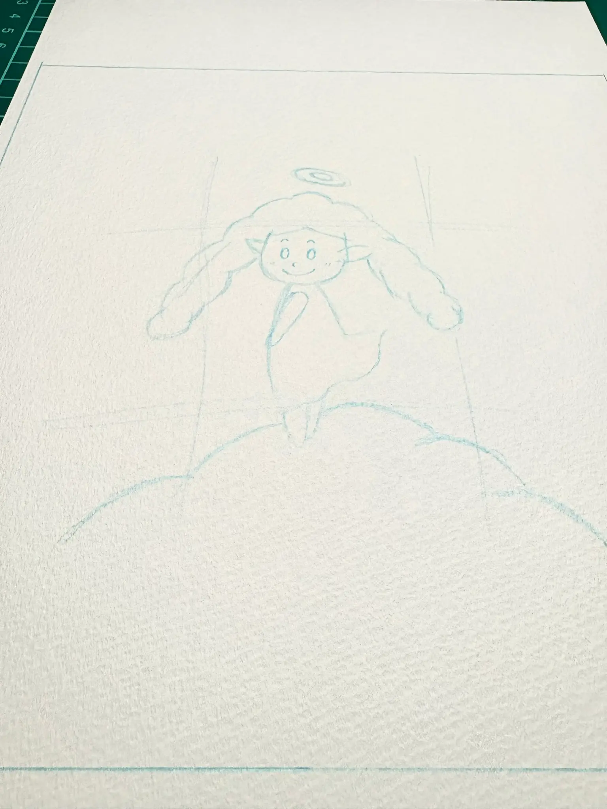
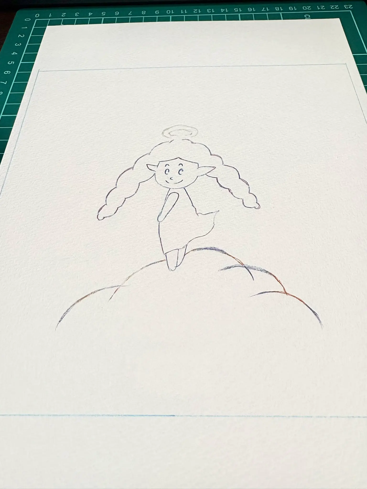
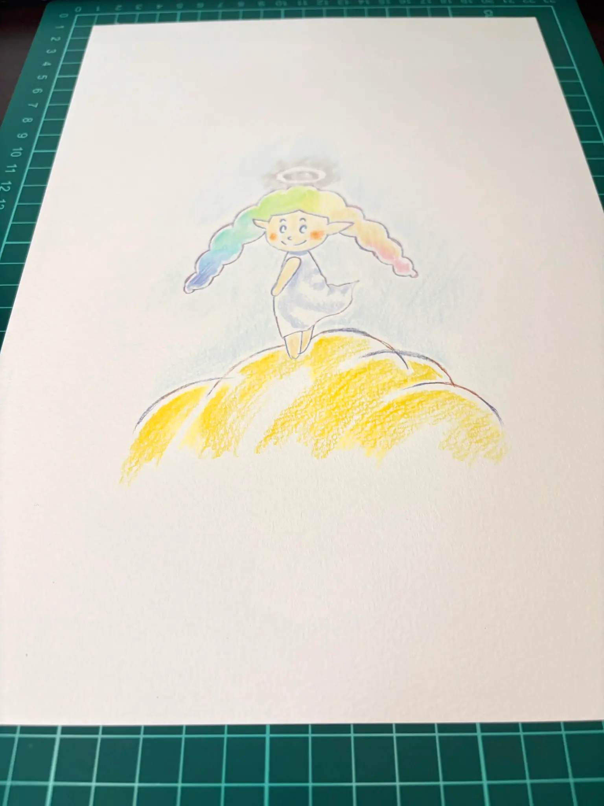
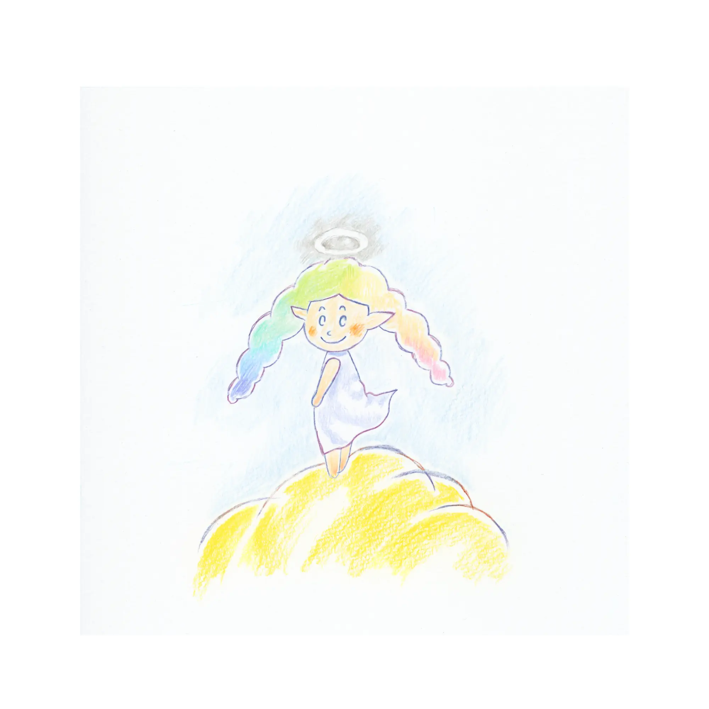
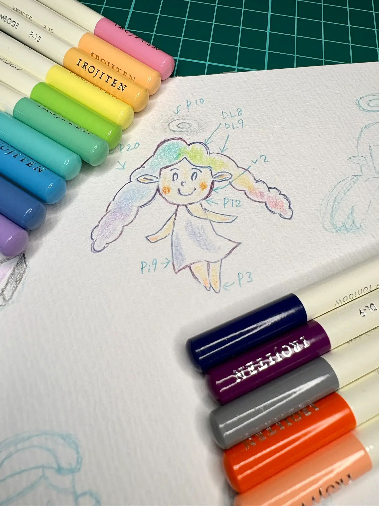

01

ラフ
物語を読み、最初に浮かんだ天使の姿を紙の上に探しました。
完成した絵の、その少し手前。線や色が育っていく時間を展示します。
約10年のあいだ大切にされてきた物語に、少しずつ絵が加わっていきました。

物語を読み、最初に浮かんだ天使の姿を紙の上に探しました。

表情や髪のかたちを整え、色を迎えるための線を描きました。

天使らしいやさしさが伝わるように、淡い色を重ねました。

虹色の髪と、あたたかな雲。物語の入口になる一枚です。

色鉛筆を並べながら、ページごとの色を細かく確かめました。
小学生のころに生まれた物語が、たくさんの人に見守られ、約10年の時を経て一冊の絵本になりました。